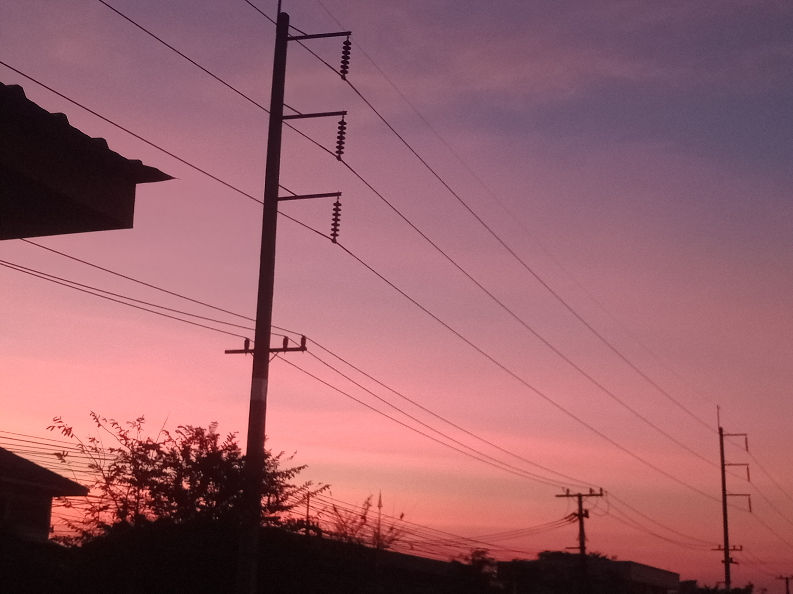
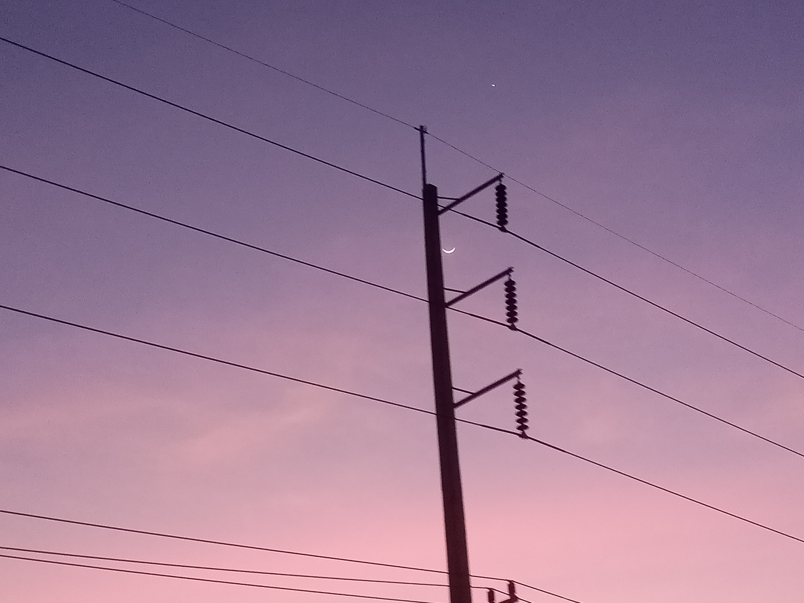
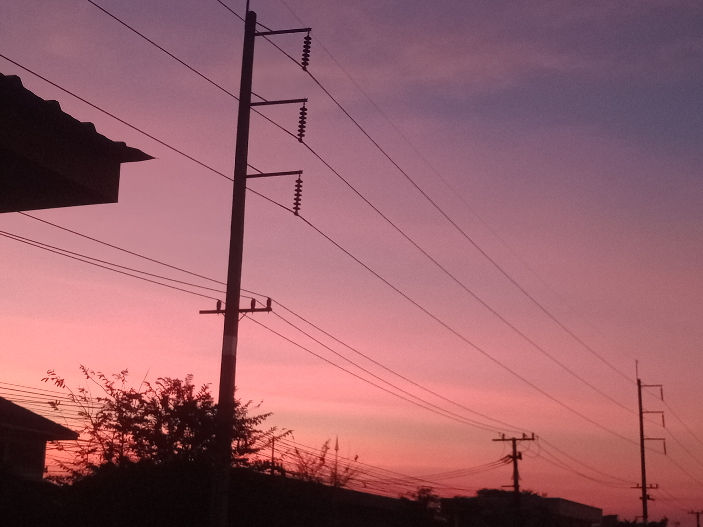
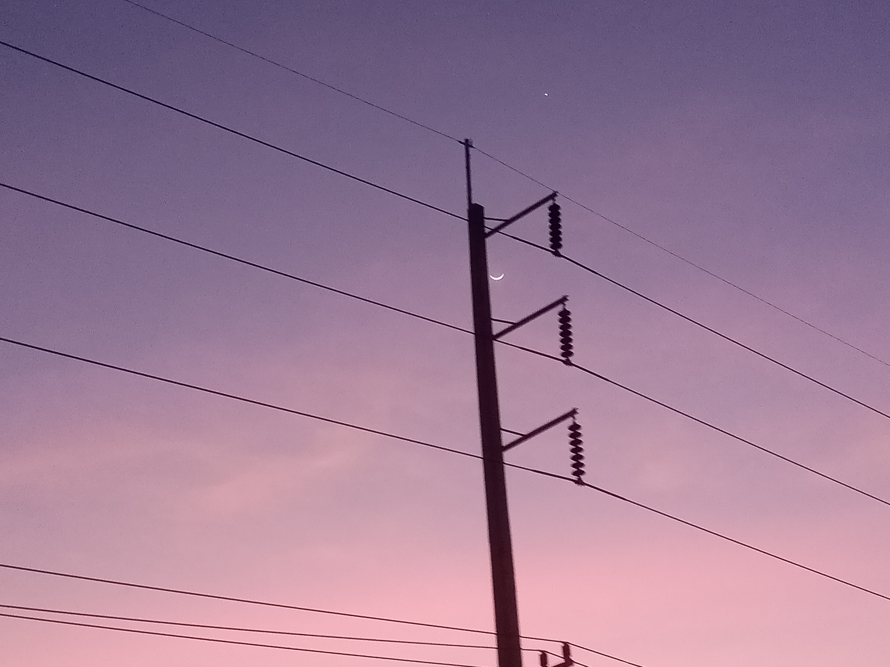

เวทมนต์ของท้องฟ้าเป็นความรู้สึกที่ลึกลับและท้าทายจินตนาการ มันเหมือนกับการมองเห็นบางสิ่งที่ไม่สามารถเข้าใจได้ทั้งหมด แต่กลับรู้สึกได้ถึงพลังที่ซ่อนอยู่ ท้องฟ้าที่เปลี่ยนแปลงตามเวลา ทั้งตอนเช้าที่แสงสีทองลอยมาถึง ตลอดจนความมืดของกลางคืนที่มีแสงดาวกระพริบไปทั่ว เป็นเหมือนการบอกเล่าเรื่องราวที่ไม่มีคำพูด แต่ทำให้ใจรู้สึกถึงความสงบและความกว้างใหญ่ บางครั้งเมื่อมองไปที่ท้องฟ้า เราจะรู้สึกเหมือนโลกนี้ยังคงมีอะไรใหม่ๆ ที่รอให้เราได้ค้นพบ เสมือนว่าเรากำลังได้สัมผัสกับบางสิ่งที่พิเศษและไร้ขอบเขต มันทำให้เราได้รู้สึกถึงความเป็นหนึ่งเดียวกับธรรมชาติ และเข้าใจถึงความงดงามในความเรียบง่าย ท้องฟ้าทำให้เราได้รู้สึกถึงอิสรภาพและความเป็นไปได้ที่ไม่มีที่สิ้นสุด มันเป็นเหมือนเวทมนต์ที่ช่วยเติมเต็มจิตใจให้เรามีพลังที่จะก้าวต่อไป แม้ว่าจะเจออุปสรรคมากมายในชีวิตก็ตาม
"ทุกคนเคยมองไปท้องฟ้ากันไหม แล้วเวลามองให้ความรู้สึกอย่างไร สามารถแชร์ความรู้สึกนั้นให้กันฟังหน่อยค่ะ"